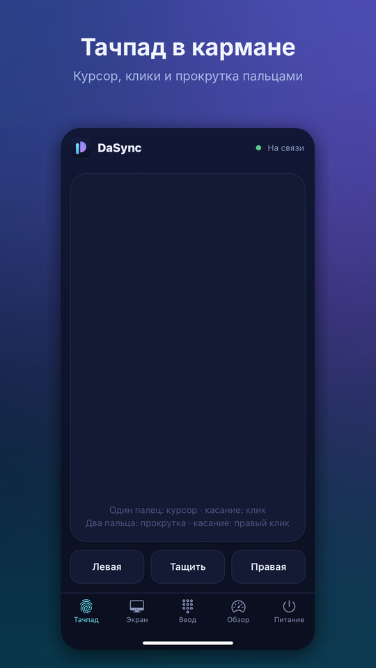
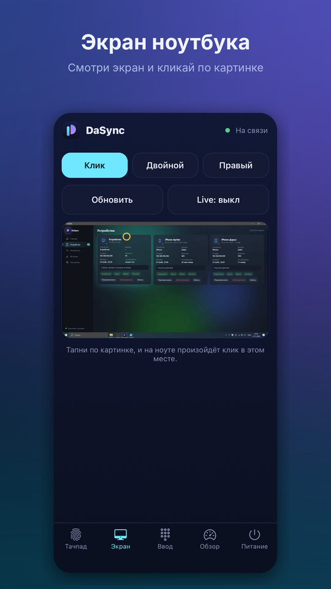
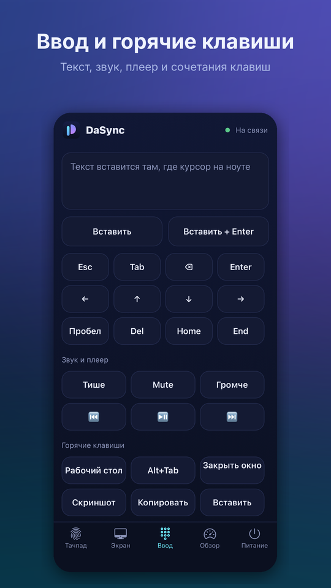
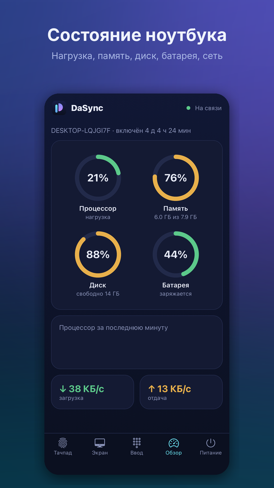
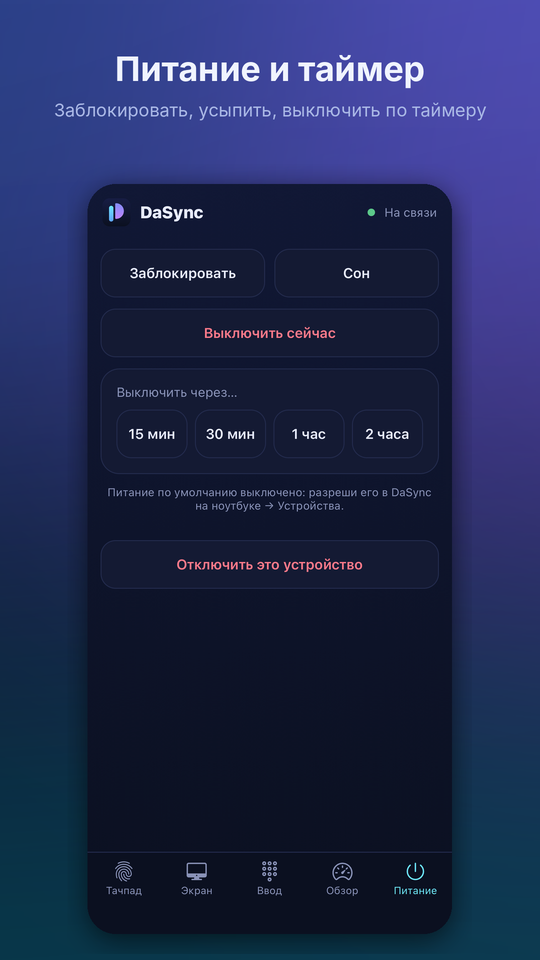

Тачпад, экран, клавиатура, файлы и мониторинг: всё с телефона, по домашней Wi-Fi. Без аккаунтов и облака.
Курсор, клики, прокрутка двумя пальцами, ввод текста (русский тоже), горячие клавиши, звук и плеер.
Смотри экран и кликай прямо по картинке. Режим Live обновляет его несколько раз в секунду.
Нагрузка, память, диск, батарея, сеть. Заблокировать, усыпить или выключить по таймеру.
Перекидывай файлы и текст между телефоном и ноутбуком без проводов и мессенджеров.
Реальные экраны приложения.





Сначала ноутбук, потом телефон. Подключение занимает минуту.
Версия в App Store и TestFlight на подходе. Уже сейчас работает в Safari: наведи камеру на QR и нажми «На экран Домой».
Скоро в TestFlightТри шага. Вводить пароли не нужно.
Запусти установщик. Окно DaSync покажет QR-код.
Открой приложение на телефоне и отсканируй QR. Код одноразовый и живёт две минуты.
Нажми «Разрешить» и выбери, что можно этому телефону: мышь, экран, файлы или питание.
Честные ответы.
Приложение новое и пока без цифровой подписи, поэтому SmartScreen осторожничает. Нажми «Подробнее», затем «Выполнить в любом случае». Мы работаем над подписью.
Подключение работает только из домашней сети. Каждое устройство подтверждается на ноутбуке, получает свои права (питание по умолчанию выключено), а каждый запрос подписан ключом. Пока трафик внутри сети не шифруется, поэтому не включай DaSync в публичных Wi-Fi (кафе, вокзалы): для этого есть пауза в меню значка.
Нет. Телефон и ноутбук общаются напрямую по твоей Wi-Fi. Ничего не уходит в облако и никуда не отправляется.
Проверь, что оба в одной Wi-Fi и что Windows считает эту сеть «Частной» (Параметры → Сеть и Интернет → Wi-Fi → свойства сети). Если у ноутбука сменился адрес, в приложении есть кнопка «Найти в сети».
Можно открыть веб-версию в Safari: наведи камеру на QR из окна DaSync и добавь страницу «На экран Домой». Нативное приложение появится в TestFlight, а потом в App Store.